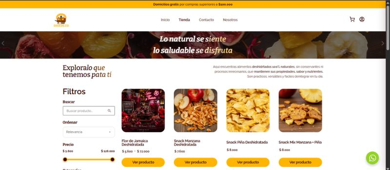

Drieds.co
Plataforma digital enfocada en la comercialización de alimentos deshidratados 100% naturales. Destaca por un desarrollo web limpio y de alto rendimiento, navegación fluida, filtros de búsqueda avanzados y una arquitectura escalable, garantizando una experiencia de usuario óptima y segura.